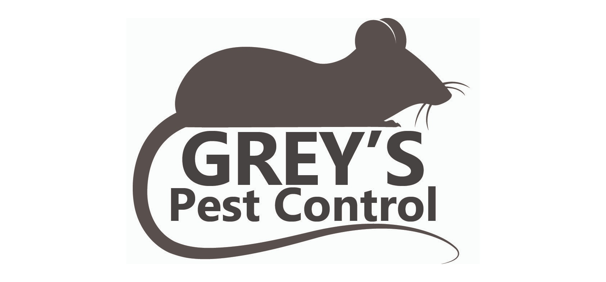

01 / Game Design
Worm Warriors
A point and click collectathon dedicated to rescuing worms off of sidewalks!
Play it HerePortfolio *
Hi, I'm Jay! I'm a programmer, designer, and digital media student looking to design user-first experiences online.
See my Projects
Always learning
and making
A little about me
I’m currently studying digital media and learning how thoughtful design, clear code, and a little personality can work together. I like projects that make people pause, smile, or find what they need faster.
When I’m away from my laptop, you’ll usually find me sketching, playing games, or collecting colorful ideas in day to day life.
What I'm learning
Academic background
School
Expected graduation: May 2027
Major
Computer Science
Minors
Theatre
Media Arts
Concentration
Artificial Intelligence
GPA
3.920
Honors & awards
President's Honor List (Two Semesters)
Provost Scholarship
Selected projects
Some of my work from over the years.
01 / Game Design
A point and click collectathon dedicated to rescuing worms off of sidewalks!
Play it Here
02 / Digital Design
A custom logo package for a start up pest control service! The client's design, brought to life after rounds of trial and error.
Ask Me About ItHave an idea?
I'm always happy to talk about a project, swap feedback, or learn something new.
chubbjessie43@gmail.com